ちょっと多いけど頑張ろう
ゲームやそれに準ずるソフトを管理するアプリ
…なんだけど、よく分からなかったら
と思ってください
（本当は全然違うけど）
Steamのサインアップページにアクセス
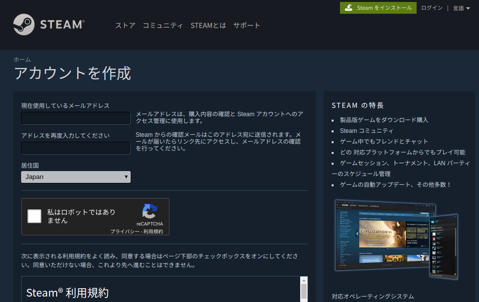
画面の指示に従ってアカウントを作成
SteamもVRChatも無料なので安心してね！
スチームのダウンロードページにアクセス
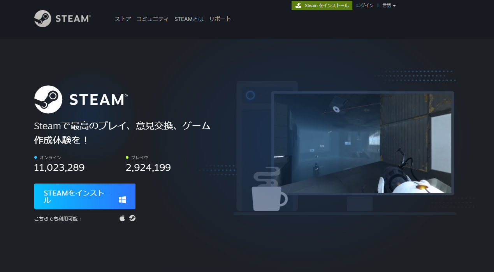
STEAMをインストール からexeをダウンロード
ダウンロードしてきたexeを開く
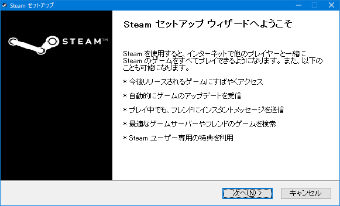
指示に従って適当にインストール
Steamのウィンドウが勝手に開くかもしれないけど
後で使うので開きっぱなしでOK
VRChatサインアップページにアクセス
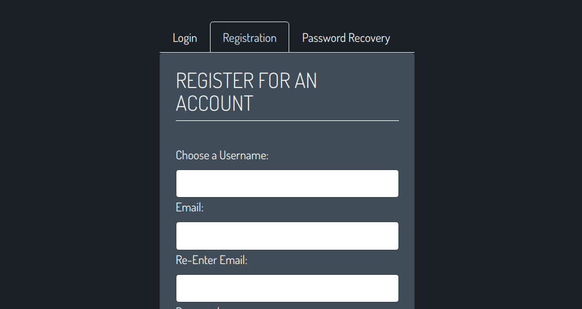
Registration をクリックし、指示に従う
ここからはSteam上での作業になります
さっき閉じた場合はもう一度Steamを起動
起動後以下のような画面が出るので情報を入力
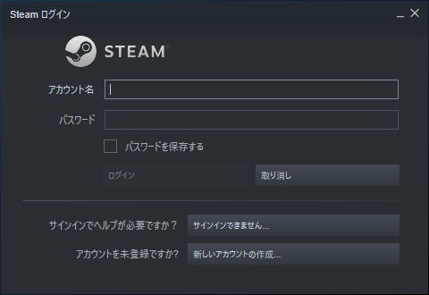
右上らへんにある検索バーに VRChat と入力
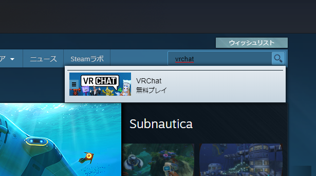
多分一番上に出てくると思うのでクリック
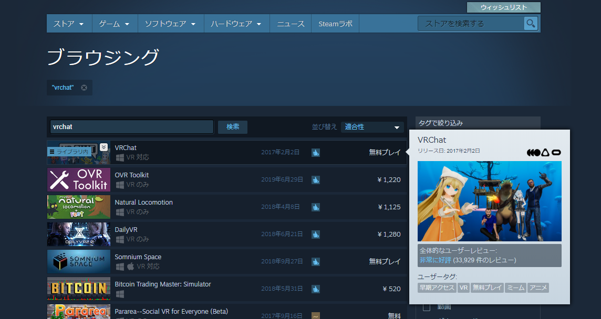
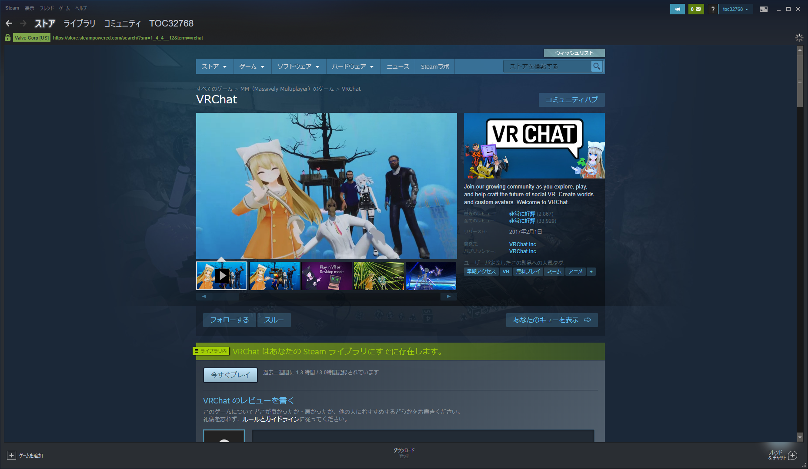
このページの、
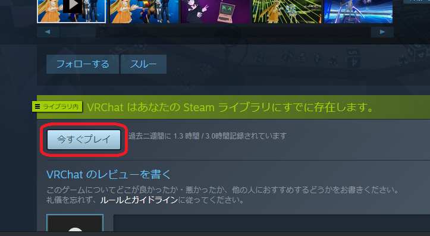
このへんの ゲームをプレイ をクリック
（この図は環境が異なるので表示が異なる）
インストールする場所とか聞かれるけど、
基本はデフォルトのままでOK
バックグランドでインストールしますよ
みたいなこと言ってくるので
画面下部の進捗バーを見つつ終わるのを待機
ライブラリ をクリックして移動すると
インストール済みのゲームが出てきます
ここに VRChat が見えたらインストール完了！
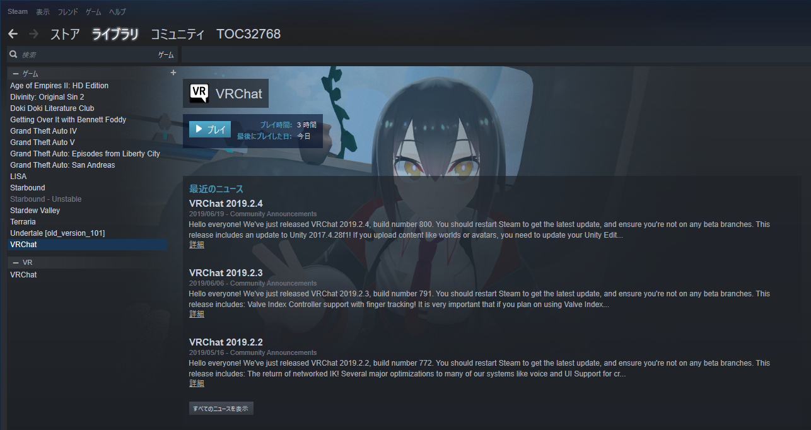
起動時にちょっとコツが要るよ
▶プレイ を押す
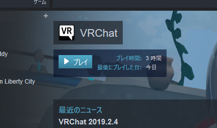
次の画面で Launch in Desktop (Non-VR) mode を選択
まだ プレイは押しちゃダメ よ！！！
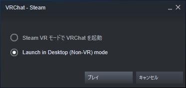
プレイ を Shiftキーを押しっぱにしたまま クリック
Shiftは ずーっと押しておいて、
タスクバーに VR のロゴが出たら離します
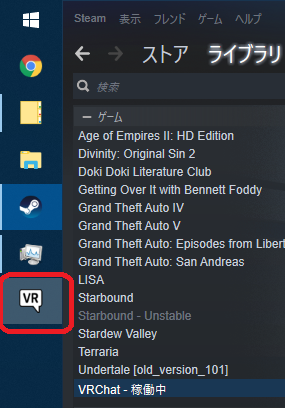
動かしているマシンのパワーに応じて設定を変えます
ここで画質を犠牲にした分だけ快適な操作
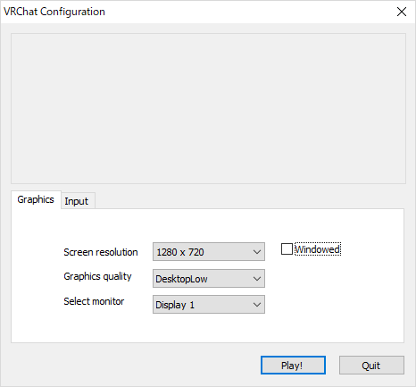
迷ったら画像の様に設定すればOK
Play! を押してVRChatを起動しましょう
VRChatが起動するとログイン画面が表示
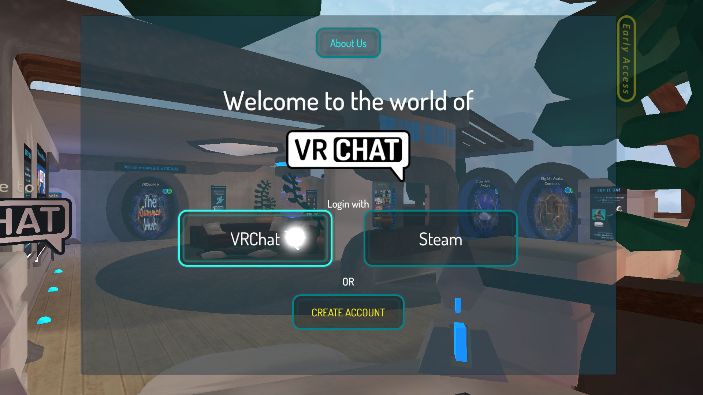
どちらのアカウントでログインするかを聞かれるので
VRChat を選択してログイン
この先しょっちゅう出てくるこれはロード画面で、
Tipsだったり注意事項だったりを表示してくれます。
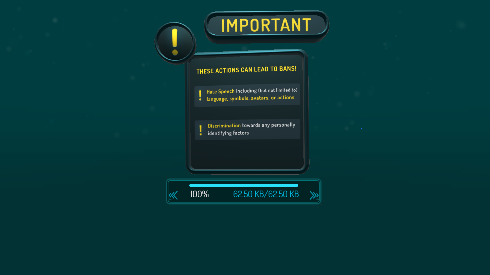
ロードしている間気長に流し見しましょう
ちなみに読み込み終わったら「Go!」を押さないと
先に進めません（面倒）
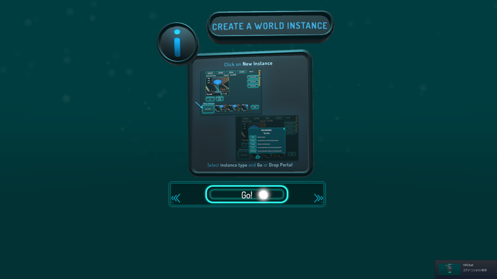
これで一通りVRChatを遊ぶ準備は完了
その後チュートリアルが始まるけど、
適当に動かして読み流していけばOK
出口のところに2つの扉があると思うので Home
と書いてある方に入れば完了
（ Hub は多分いきなり他人と遭遇するので危険）